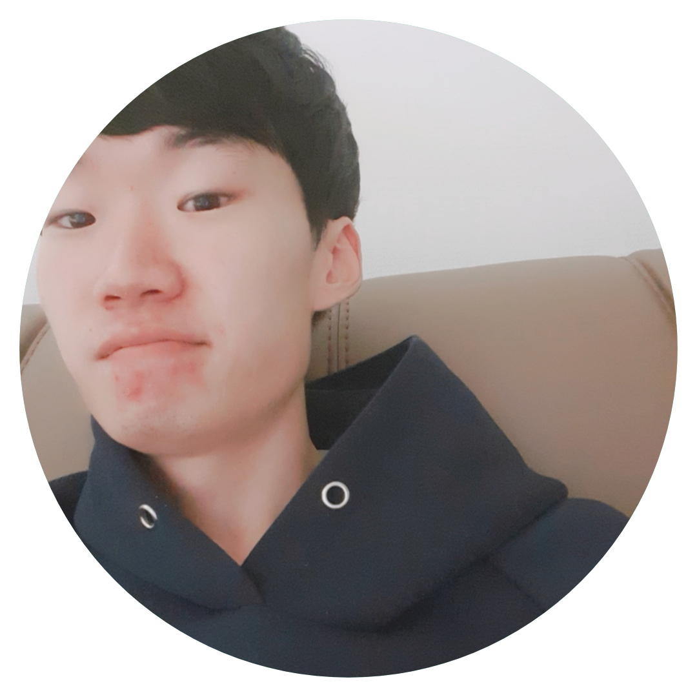

새로운것을 좋아하는 개발자입니다
front-end developer
프론트엔드 신입개발자 이중오
안녕하세요 반갑습니다 저는개발에관심이많고 기회가된다면 새로운기술에도전해보고 싶습니다 우연히유튜브로시작한 코딩이 점점커져 개발자의꿈을 꾸게되었습니다
My Name Is Jung Oh LEE
Skills
IntroDuce
UI/UX
저는 UI/UX에 관심이많습니다 보기좋은떡이 먹기도좋듯이 예쁜화면보는것을 좋아합니다
피드백
피드백 언제나환영합니다 개발자로성장하는데있어서 빠뜨려서는안될 필수적인 요소라고 생각합니다 달게받겟습니다
삽질하기
삽질 정말많이합니다 하지만파다보면 결국엔 물이나오듯이 성공하고야마는 끈기,포기하지않는근성을 가지고잇습니다
새로운기술도전
아직 새로운기술에 도전해본적은없지만 추후에 프로젝트를만들어보면서 도전할계획입니다